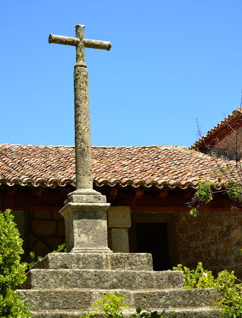

| MONUMENTOS | |||||||
|
|||||||
| LUGARES DE INTERÉS | |||||||
|
Dedicada a Nuestra Señora La Virgen de Valsordo, está situada en un paraje inigualable, que transmite una inmensa sensación de paz encontrándose a dos kilómetros y medio, aproximadamente, del pueblo de Cebreros, en el camino que baja al río Alberche, comúnmente conocido por El Río de Valsordo. La leyenda dice que el nombre procede de un Valle, donde un pastor sordo pastoreaba su ganado; siendo allí donde se le apareció la Virgen varias veces. Finalmente y tras mucho insistir este hombre, se levantó dicha ermita para ella. La época exacta en que se construyó no se sabe, ni han aparecido hasta la fecha ningún documento ni se tiene noticias de cuando pudo haber sido. Existe un manuscrito de Ángel Mateos del año 1905, copiado de unos antiguos pergaminos en el que nos dice: “que existía una casita hecha por los labradores en una dehesa, y que la Virgen vivía en ella cuando los moros invadieron la Península, teniendo que abandonar su casa ante la barbarie de los moros para irse al desierto de Lancha Luna.” Si esto fuese verdad podríamos situar la primera construcción antes del año 711 que es cuando los moros invadieron España, y fue entonces cuando Tariq pasó por Cebreros, cruzando por el Puerto de Arrebatacapas. “Pasados Muchos años la Virgen volvió a su casa que aún existía , pero sobrevino otra invasión y la Virgen marchó a su Lancha Luna, destruyendo los moros la casa y cuanto había en la dehesa en donde estaba situada “. El primer dato escrito que se tiene hasta la fecha es en el año 1250, en la Consignación de Rentas del Cardenal Gil Torres en el que aparece el lugar de Valsordo aportando su respectiva renta. Otra referencia escrita es la contribución de La ermita de Santa Maria de Valsordo sobre las rentas que rendía al Arciprestazgo de Pinares con una cantidad de 2.200 maravedíes en el año 1450. Existe un reloj de sol en la fachada de la ermita en el que puede verse el año de 1688 pudiendo corresponderse la fecha con la ampliación del Camerino en donde la imagen estaba prácticamente a la intemperie pudiéndosela contemplar desde el exterior sin necesidad de acercarse a ella. Se sabe que hubo una ampliación de la ermita en 1766, debido a que se derribo un muro. En una reparación se encontró un manuscrito en el que se decía “se hizo esta obra en 1766 “. De esa misma fecha es también la ampliación de la casa, típica de ermitaño. Se realizaron varias obras de reparación en 1806 y 1857. La ermita fue restaurada totalmente entre 1985 y 1986 conservándose los más mínimos detalles, fotografiándose previamente éstos para conservarse tal cual eran. Encargándose de vigilar los trabajos de restauración el entonces párroco de Cebreros en esos años D. Felipe Doyagüez, junto con el patronato. El estilo de la ermita no se puede definir debido a las ampliaciones habidas en las distintas épocas. En el primer levantamiento se haría lo que es hoy la sacristía y el Camerino de la Virgen, se destaca por su sencillez. En el segundo cuerpo o presbiterio se situa el retablo, sobrio, enmarcando la imagen de la Virgen. El acceso al presbiterio se hace por una ojiva flanqueada por una amplia reja de hierro forjado. Sobre el arco existe una pequeña campanera por lo que se deduce que esta era la primitiva ermita, siendo ésta la fachada principal hasta su ampliación en 1766, según se desprende el manuscrito. El techo es de estuco, decorado con sencillos relieves enmarcados por líneas doradas. El tercer cuerpo es de forma rectangular, destacando su artesonado de estilo mudéjar. Sobre la entrada principal existe un coro, con su barandilla de estilo castellano; el enlosado es de baldosa clásica. Un porche de granito situado al sur de la fachada es uno de los componentes de la ermita, con poyatos de piedra adosados a la pared que invitan a descansar a la sombra del tejado, soportado por unas pilastras de granito, cierra el porche por la parte sur una barandilla de hierro forjado como las puertas de hierro del interior. Esta verja separa un jardín llamado “El Jardín de la Virgen “en el que se encuentra una cruz de granito, sobre un pedestal de varios escalones, figurando en la peana el año de 1672. Estos son a grandes rasgos la historia y descripción de la Ermita de Valsordo. No hace muchos años, cualquiera podía ir a la casa del párroco y solicitar la llave para entrar, la cual entregaba una feligresa al cargo. Esta ausencia total de desconfianza a la hora de dar la llave a cualquiera se debe a la facilidad que dicen tiene la Virgen para protegerse de robos: siempre que alguien intentó robar a la Virgen, fue atrapado. 
 |
||